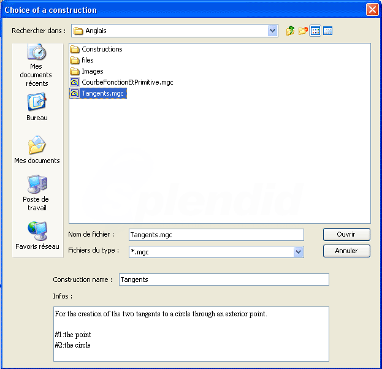

We wish to create a construction with the purpose of creating the two tangents to a circle through a given point (exterior to the circle).
Use first menu File - new Figure without unity length.
Use tool  to create three free points we will refer to as O, A and M.
to create three free points we will refer to as O, A and M.
Use tool  to create the circle with center O and through point A.
to create the circle with center O and through point A.
Our construction must use the circle center but must not use point O. Indeed final objects must only be constructed through the circle and point M. They are not allowed to use point O which was used to create the circle.
Use tool  to get point O masked.
to get point O masked.
Use menu Create - Point - Circle center then click on the circle. A new point appears.
Use tool  to create the midpoint of the segment joining M to the circle center. We will call it I.
to create the midpoint of the segment joining M to the circle center. We will call it I.
Create now the circle with center I and through point O.
Use intersection tool  to create the intersection of the two circles. Two points are created we will refer to as P and Q.
to create the intersection of the two circles. Two points are created we will refer to as P and Q.
Use tool  to create segments [OP] and [OQ].
to create segments [OP] and [OQ].
Use tool  the lines perpendicular to this two segments through P and Q. These are our two tangents.
the lines perpendicular to this two segments through P and Q. These are our two tangents.
Use menu Constructions - Sources objects choice - Graphical
Click first on M then click on the first circle.
Use then menu Constructions - Final objects choice - Graphical.
Click on the two tangents.
We have now to finalize the construction.
Use menu Constructions - Finish current construction.
A dialog box pops up. Fill it in as shown here :

The first line gives information about the macro.
The two last lines will give information to the user of the macro when the user will implement the macro.
Click OK to validate.
Save now your construction in a file via menu Constructions - Save construction of figure to file. Keep the name tangents for the file.
Let's use now this construction in a new figure.
Create a new figure.
Create a circle and a point exterior to it.
Use menu Constructions - Implement construction from file.
A dialog box pops up as shown below.

If you click on a construction file (mgc extension) you can see in the bottom of the dialog box information on this construction.
Click on tangents.mgc then click on Open button.
The indication line at the bottom of MathGraph32 frame requests a click on the point. Click on the point the future tangents will pass through.
The indication line asks for a click on the circle. Click on it.
The two tangents appear (if the point was exterior to the circle).
To be noticed : When you implement a construction from a file or save a construction in a file, the default directory for the open or save dialog file can be chosen in menu Options - Preferences and tab Constructions directory.
Created with the Personal Edition of HelpNDoc: Full featured Help generator